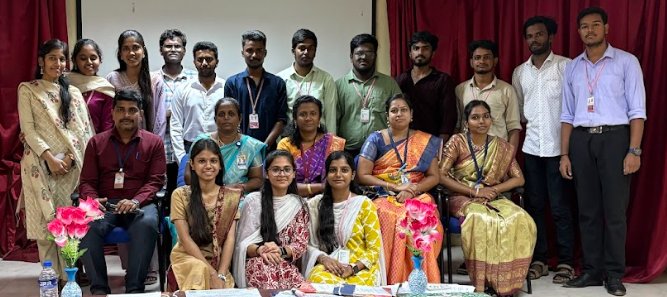
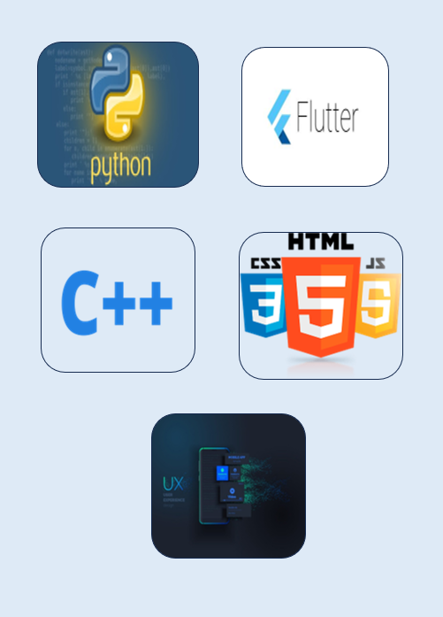
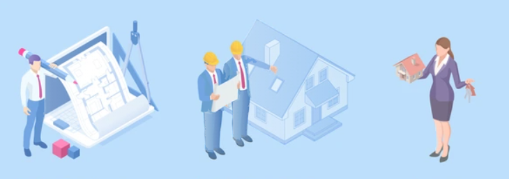

Blog
My Journey in Tech
My journey in technology began with a simple curiosity — how things work behind the screen. That curiosity soon turned into a passion for building, designing, and solving problems through code. I started by learning the basics of C and Python, then expanded my skills into web and Flutter development, creating projects like an Amazon clone, Spotify clone, and Book-Sharing App. Along the way, I explored Firebase, UI/UX design, and data analytics, which deepened my understanding of how technology can make life smarter and more connected. Today, as a Computer Science and Engineering student at KLN College of Engineering, I’m driven to keep learning, experimenting, and innovating — transforming ideas into impactful digital solutions that blend design, performance, and purpose. “From curiosity to creation — every line of code tells part of my story.”
What I'm Working On

I’m currently working on a series of projects that combine creativity, functionality, and real-world impact: 📱 Flutter Projects: Building cross-platform mobile apps like a Financial Tracker App and a Book-Sharing Community App using Firebase for authentication and real-time data. 🌐 Web Development: Designing responsive, interactive websites using HTML, CSS, JavaScript, and Bootstrap to enhance user experience. 🧠 AI & Python Integration: Exploring how Python can be integrated with web and Flutter apps for tasks like video analysis and automated report generation. 💡 Continuous Learning: Expanding my knowledge in UI/UX design, MERN stack, and cloud technologies to stay ahead in modern development trends. “Every project I build is a step closer to turning ideas into impactful digital experiences.”
My Vision
My vision is to innovate through technology and create digital solutions that make everyday life easier, smarter, and more connected. I aim to blend creativity, design, and development to build applications that not only function flawlessly but also inspire and engage users. As I continue to grow as an engineer, my goal is to contribute to impactful projects that drive sustainability, accessibility, and innovation in the tech world. “Code with purpose, design with empathy, and build for a better tomorrow.”
techfest
Tech Fest at KLN College of Engineering (KLNCE) is our annual celebration of technology, innovation, and creativity. It brings together talented minds from various disciplines to explore cutting-edge advancements in AI, IoT, Web Development, App Innovation, and Robotics. As a Student Coordinator, I’ve had the opportunity to lead and organize events, manage participant engagement, and collaborate with teams to ensure a smooth and impactful experience. This role has strengthened my skills in leadership, teamwork, communication, and event management, while giving me a front-row seat to the creativity and technical brilliance of my peers. The fest serves as a hub for learning, collaboration, and innovation, inspiring students to transform their ideas into real-world solutions. “Empowering innovation, inspiring collaboration — that’s the spirit of KLNCE Tech Fest.”
Skills

project
In my second year journey first mini project is University Result Publication System (Java) Tech Stack: Java Description: A console-based project to manage and display university results. Students can log in using roll numbers and view marks for all subjects. Automated grade and result calculation system.
In the Second and Third-year i start my irp project Borrow Booksy – Community-Based Book Sharing App Tech Stack: Flutter, Firebase Description:An app that connects readers within a community to share and borrow books.Users and admins can post books with cover images. Others can request a book; once approved, the requester gets the owner’s contact details.Book images are uploaded to Google Drive for easy storage and retrieval.